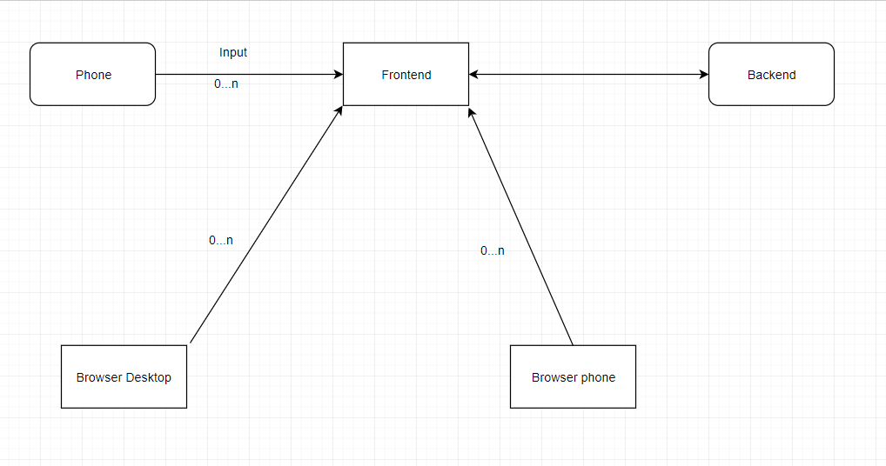

Documentation APix
Abstract
APix is a web application that highlights teamwork and mobility in a small simple package, to enable users to draw collaboratively on a single canvas. Its working enviroment is a web browser (desktop and mobile orientated) but also offers its users to use their phone as a pointer for drawing on the canvas via an Android application.
Motivation
Similar applications, even though have a lot of drawing capabilities, do not offer support for alternative input devices, like your smart phone. We also wanted to offer a more adaptable application, to be able to edit your photos on all devices, regarding of their size.
Application summary
Web
APix is a web based application where people can draw together on a web browser, on desktop or mobile, which offers multiple functionalities:
- customizable canvas dimensions
- import a background image from any device
- basic drawing tools: brush thickness, color, eraser
- zooming and scrolling inside canvas
- export drawing in PNG/JPEG format
- collaborative work via shareable link
Android - TO EDIT
On a android side we developed a simple application using a "hybrid" approach, meaning that we create the user interface using HTML5, CSS3 and Javascript, which are interpreted inside an WebView component of the Android OS. This application will allow the user to connect to a session by scanning a QR code generated by APIx. Besides, it will provide handy controls such as color choosing, uploading a photo directly from the android device and brush thickness.
Application arhitecture - TO EDIT

Fig. 1 - Application arhitecture diagram
The workflow of the application
Upon entering on the website the user will be prompted with a dialog to set up the canvas suited for his needs:
- width and height of the canvas
- image - button to upload an image background

Fig. 2 - Initial settings dialog
Before preceding to the next step, the user may be prompted with another dialog,
in case the connection with the server could not be established.

Fig. 3 - Network error dialog
After submitting the initial settings he will be prompted to the actual working space: the canvas with the desired dimensions where he will observe various functionalities right next to the actual canvas:
- content_cut - eraser
- palette - changing color input
- line_weight - change brush thickness
- zoom_in - enable zoom and scrolling inside canvas

Fig. 4 - Actual working space
After the user got accustomed to drawing on the canvas and using all provided features, he has several options left. The options are revealed by pressing the menu icon in the top-left corner of the page and they consist of:
- file_downloadPNG - to export drawing in PNG format
- file_downloadJPEG - to export drawing in JPEG format
- group_add - to generate a shareable link to be sent to another drawing partner
- refresh - to start a new, fresh session of drawing

Fig. 5 - Side menu for different features
Android companion - TO EDIT
The android companion is a simple-to-use app providing basic functionalities, enabling the device to be used as a pointer for APIx. The application starts with a screen with a single button, which, when pressed, will open the camera (using HTML5 input tag) in order to scan the QR code generated by a session of the web application. If the QR code is valid, the application will then display the main page, which contains buttons for turning the pointer on and off, changing the color with which we are drawing, changing the brush thickness and taking and uploading a photo from the device to be used as canvas background. While initially we will offer support only for portrait orientation, later on we might introduce the ability to use the device as an eraser for the drawings when in landscape orientation.Fig. 6 - Android Landing Page
Fig. 7 - Android Mainpage
Technologies
Client Side
To create APix we used HTML5, CSS3 and JavaScript for the frontend part but also some Material Design icons and suggestions for a pleasant UI. The project has been created without any external libraries for javascript and for that reason, HTML5 features & pure javascript have been used to obtain different desired effects.
The HTML5 canvas element
The canvas element from HTML5 has been used repeatedly as the main focus of this project was to be able to draw in a browser. We used 3 canvases: background_canvas, drawable_canvas and visor_canvas. The main point from this layering was to separate different meaning canvases:- the background_canvas - to store a image as background, which would not be changed
- the drawable_canvas - the canvas on which we actually draw and needed to be updated regularly
- the visor_canvas - the view to the first 2 canvases, taking into account the scrolling and the zoom used by the user
We focused on providing a reliable and stable way of providing our services on all devices, so that, for example you could edit a 1050×1500 px photo on a smart phone or on a desktop computer. A versatile and responsive application.
First steps into javascript
Regarding javascript, we invested a LOT of work into it as we needed to use only pure javascript. Because of this we first implemented first basic functions: color choice, line thickness and upload of image background but soon after things got much more complex.Understanding javascript
Javascript is an event-based language, meaning you active something when an event is fired. In the beginning we made rookies mistakes of assuming that our code will work sequentially, which made debugging it much harder but soon after we got accustomed to it.Hardcore javascript
Later on we tackled much bigger issues of providing a reliable zoom effect and scroll effect. It's safe to say that to create from scratch a reliable zoom functionality proved to be much harder than anticipated: we had to understand how to emulate this effect, because the canvas element does not provide it, so we had to redraw the whole picture based on the scroll of the mouse wheel. As a later improvement, the zoom effect was updated, to take into account the position of the mouse in order to zoom in a specific area where the mouse was pointing.Javascript + networking
Having a real time connection with the server meant that if we wanted to deliver a pleasant user experience we had to improve performance, because at a point things were snail speed slow. The main reason was because we were redrawing everything at 30fps -- which even on local machine was causing the gpu to spike. So we solved this issue by adding caches: whenever anything changed, we would re-render that thing. Our inspiration came from working with javascript, an event-based language. Soon after that, we were pleased with the results.Server Side - TO EDIT
We will decide later upon the technology to be used for the backend to better fit our needs.
Development method
For the development process we used GitHub to track down progress and fix bugs that appeared at some point. For new features we will create new branches which, after finishing the implementation, will be added to the master branch. Also, when trying to implement new features we usually created a new branch for further research and not to stop the development the project.
Task distribution
The following list is an overview one. Both of us provided each other feedback and solutions, or actually worked on the others part in order to create a better application. We believe that a good product comes from great team-work and hard-work and we hope we delivered!
- Cristian Huma - mostly client-side
- Frontend HTML5+CSS
- Backend Javascript
- Documentation and demo
- Corodescu Alin Andrei - mostly backend-side + android
- Frontend HTML5+CSS
- Backend Javascript + Python + Deployment
- Integration Android
- Documentation and demo